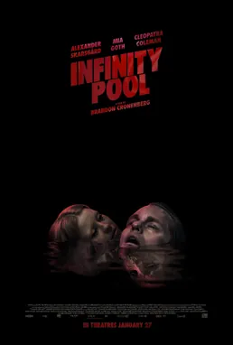

The genetics
Duplication of people is the premise of this satirical horror film. In Li Tolqa, foreign visitors who commit crimes can pay a large fee to have an exact copy of themselves made, down to the memories of the crime, and the copy is executed in their place; the process leaves the original unconscious, so that one tourist asks James whether he can be sure he is the original. No scientist appears and the method is never explained. The copies are used as disposable stand-ins and are bought and abused for entertainment, including one made to behave like a dog, and the corrupt state and the wealthy tourists who exploit them are the film's targets. The film is less about the science than about privilege, impunity and the loss of the self. Real cloning could never produce an adult copy with the original's memories.
How genetics is portrayed
- Overall portrayal of genetics
- negative Duplicating people is a commodity that lets the rich buy impunity and indulge in cruelty, in a deliberately disturbing satire.
- Outcome of the genetic intervention
- negative The copies are executed, beaten and killed for entertainment, the tourists escape justice, and James is left broken.
- The state of Li Tolqa
- villain Aim: commercial (negative). It sells copies of guilty foreigners for execution in their place, and its corrupt police even supply extra copies to the tourists. The film presents the system as corrupt and exploitative.
- Gabi Bauer and the tourist group
- villain Aim: malevolent (negative). The wealthy tourists pay for doubles so that they can commit crimes without consequence, and torment James by making him kill his own copies. The film presents them as predatory and loathsome.
The story
James Foster, a struggling novelist, holidays with his wealthy wife Em at a resort in the fictional country of Li Tolqa, where they meet Gabi, who claims to admire his book, and her husband Alban. After a forbidden trip outside the resort, James runs over and kills a local man. The penalty is death at the hands of the victim's eldest son, but foreigners can pay to have an exact copy made, with all their memories, and executed in their place. James pays, and watches his double being stabbed to death, fascinated rather than horrified. Em leaves him, and James joins Gabi's group of wealthy Western tourists who return every year to commit crimes and watch their doubles die. They lead him into violence and drug-fuelled orgies, trick him into beating one of his own doubles, and when he tries to flee they hunt him down and force him to kill another. The tourists fly home, while James stays behind alone at the empty resort.